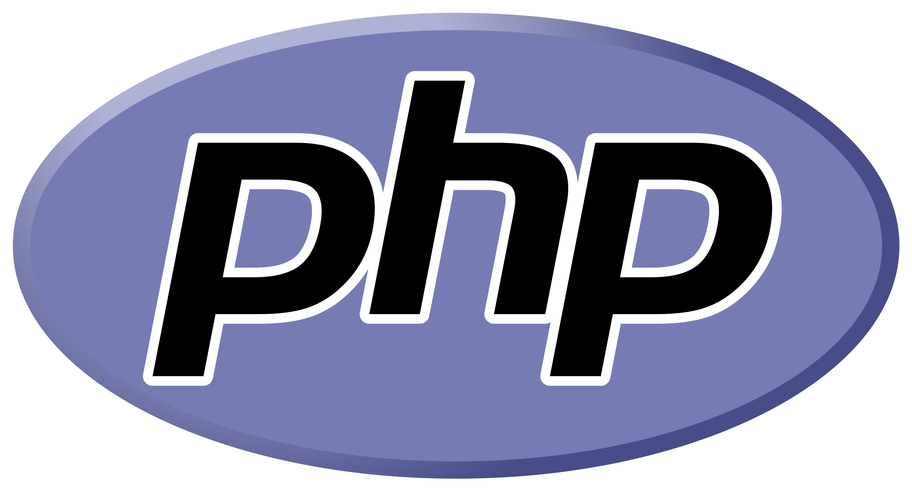
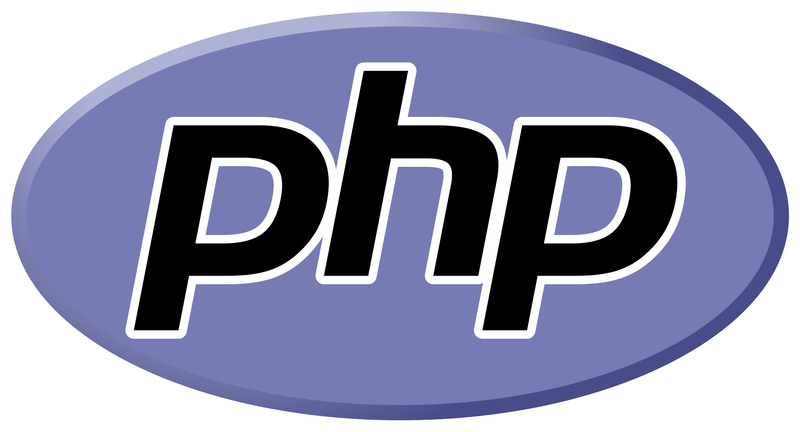

Here are some of the projects I enjoyed building


Massy Academy
SEO | Content Creation | Website Design | Website Building
University degree webdocumentary
Project Management | Front-End
Data visualisation project : USA crime
Front-end | D3 js | ChartJs | Dataset
Anti-cyberbullying campaign
Front-end | Interactive Game | Back-end
Massy Academy
Why ?
In my first-year internship, I had the exciting challenge of creating a fully responsive website for a local kids' football club. Despite not being in an agency with guidance from senior developers, I gained a ton of experience tackling this huge project solo.
This opportunity didn't just end with the internship; it actually led to a continuing role with the football club as a web developer. Right now, I'm working on developing an online registration process with online payment and an admin dashboard using the MERN stack.
How ?
I had to build the ENTIRE website from scratch, which meant more than just coding it. First, I had to lay out the structure of the site, then develop the content and its design, before finally diving into the coding phase. For someone who had primarily focused on web development, this project pushed me to wear multiple hats, utilizing the diverse skill set I had acquired during my first year at university. Additionally, I honed my SEO skills, as my goal wasn't just to build the website, but also to optimize it to rank at the top of Google search results.
- Html | Css | Javascript
- Content creation
- Web Design
- SEO | Market research
- Communication with client
MMI Webdocumentary
Why ?
This project is probably the one I've been most passionate about. I really love my current university course and wish more people knew about it. Unfortunately, there is too little information about it online. That's why I've thought of an interactive way to introduce this course to the public: show what it's like by telling a story from the viewpoint of an outsider who joins first-year students on their final projects. Through this fictional experience, the user learns more about the course.
How ?
Even though I was the lead front-end developer, it was my growth as a project manager and team leader that truly stood out in this project. I took my role to heart, proactively seeking feedback from those around me about what makes a great team leader and how I could be better. It was these soft skills that really made a difference and shone brightly throughout the project.
- Html | Css | Javascript
- Content creation
- Web Design
- Leadership
- Communication
- Team Management
- Project Management
Datavisualisation
Why ?
This project served as my entry point into the realm of data visualization. I acquired skills in working with APIs, JSON, and CSV files, and learned how to effectively present information using various forms of data representation like graphs and maps. The theme we chose to explore was particularly intriguing: the crime rate in the US, with a specific focus on identifying the factors that could impact it.
How ?
Due to the intense workload, my time on this project was limited, which meant I had to learn about handling APIs, working with JSON/CSV files, and mastering Chart.js and the more advanced D3.js library in a very short period. This time constraint forced me to concentrate exclusively on the essential skills needed for the project, without delving into broader concepts. For example, in D3.js, I focused solely on what was necessary to create a choropleth map. As a result, while I'm now proficient in map creation, I can't construct even a basic line graph. This experience taught me to efficiently target and acquire specific technical skills under tight deadlines.
- Html | Css | Javascript
- Datavisualisation
- ChartJS | D3js
- API | Json | CSV
- Adaptability
- Optimized learning
Anti-cyberbullying Campaign
Why ?
My end-of-the-year project during my first year at university lasted for a whole month with no other classes to distract us. It was a team project with a unique focus: creating an awareness campaign about cyberbullying. However, our approach was unconventional – we targeted the bullies instead of the bullied. This twist led to some pretty interesting results by the end of the project.
How ?
I was the main web developper whether it was for the front-end or back-end (in one of the pages, users (aka the bullies) can leave a message to "repent". We designed a simple dashboard to screen these messages and prevent trolling.). his project marked my first experience collaborating with a full team of content creators and web designers, and it was an incredibly rewarding experience. While my focus was on web development, the real learning curve for me was in team management and communication. Additionally, creating an interactive game for the campaign presented a unique and intriguing challenge.
- Html | Css | Javascript
- PhP | SQL
- Team management
Ongoing
MMI App

 


In collaboration with Nicolas Lerond (back-end) and Renata Kaerutdinova (design)
Role : Front end dev
Our MMI APP will provide students with a comprehensive, one-stop solution for their academic and extracurricular needs with its features such as timetable management, assignment tracking, and grade monitoring within a single, user-friendly platform. Additionally, students can create and discover events, develop connections with peers.
Throughout this project, each of us aims to enhance and extend our current skill sets. Personally, this marks my inaugural real-world project in React, and my goal is to apply everything I've learned so far to solidify my understanding and mastery of this framework. Furthermore, although my primary role will be as a front-end web developer, I will also contribute to some of the back-end aspects.
A few words about me

A breath of fresh air, a bit of craziness, dilgent... Hi, I'm Ayoub. Born in the warm tones of Morocco (9y), I grew up absorbing the elegance of France (6y), the resilience of Guinea (3y), and the modern vibes of the UK(3y).
Crafting code, witnessing a project grow from an abstract idea, coding on a project for hours not realising that it's already morning and not having slept a wink, it was an immediate infatuation.
Front-end, Back-end, SEO, UI/UX, project management – I wear multiple hats, but they all fit perfectly. Through each line of code and every pixel, I build solutions on the web.
Dive deeper into my journey by downloading my resume
I like to
Every Sunday morning
Finish in one go
Give and receive one
Visit every place on earth
Let's connect
Do you have an interesting project in mind or do you just want to reach out and say hello? It's right here :
+33 7 65 75 68 92